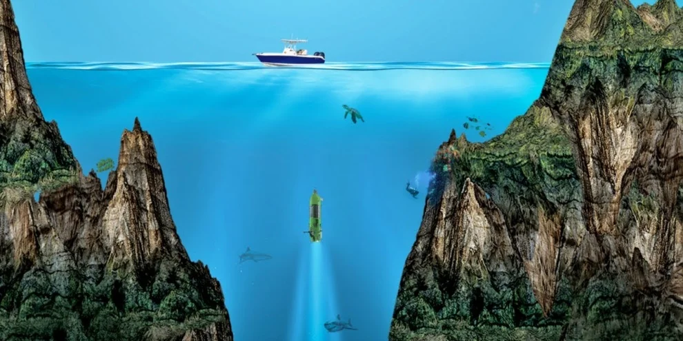

Curiosidades sobre os Oceanos
1. A Profundidade dos Oceanos
O ponto mais profundo do oceano é a Fossa das Marianas, no Oceano Pacífico, que atinge aproximadamente 11.034 metros de profundidade. Este local é mais profundo do que o Monte Everest é alto.
2. A Imensidão do Oceano
Os oceanos cobrem cerca de 71% da superfície da Terra. Eles contêm 97% de toda a água do planeta e são fundamentais para a regulação do clima e a produção de oxigênio.

3. Biodiversidade Marinha
Estima-se que cerca de 80% das espécies marinhas ainda não foram descobertas. Os oceanos abrigam uma imensa diversidade de vida, desde microrganismos até grandes mamíferos como baleias e tubarões.

4. Correntes Oceânicas
As correntes oceânicas desempenham um papel crucial na regulação do clima global. A Corrente do Golfo, por exemplo, é uma das mais importantes, transportando água quente do Golfo do México para o Atlântico Norte.

5. O Grande Azul
A maior estrutura viva da Terra é a Grande Barreira de Coral, localizada na Austrália. Ela se estende por mais de 2.300 quilômetros e pode ser vista do espaço.